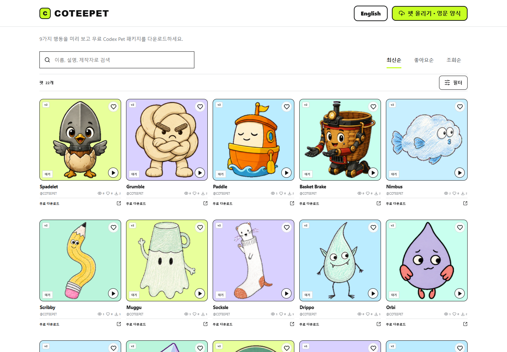
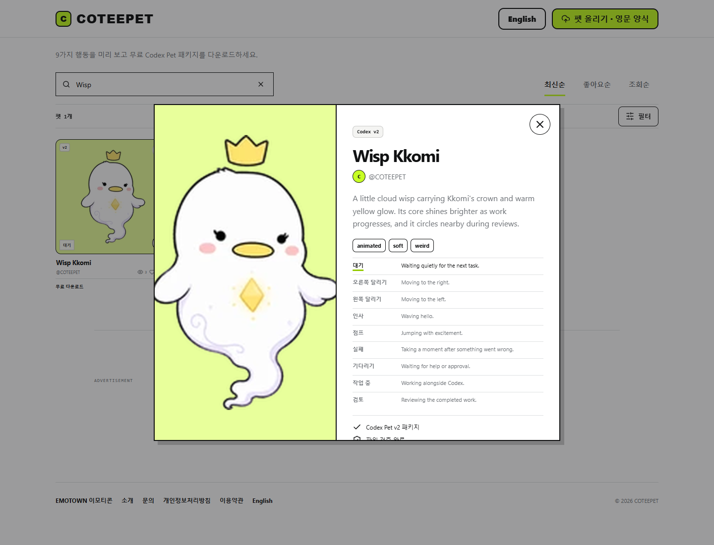
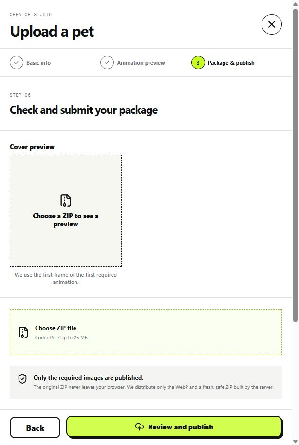

Codex Pet 캐릭터를 찾아보고 무료 패키지를 내려받는 웹 카탈로그입니다. 캐릭터 상세에서 9가지 행동 애니메이션을 바꿔 보며 외형과 움직임을 확인할 수 있습니다.
COTEEPET
서비스 소개
주요 기능
- 캐릭터 탐색 — 이름·제작자 검색, 필터와 최신·좋아요·조회순 정렬
- 행동 미리보기 — 대기·달리기·인사 등 9가지 애니메이션 재생
- 다운로드 — 펫 ZIP, 원본 스프라이트시트와 동작별 PNG 선택
- 펫 올리기 — 로그인 후 기본 정보·동작을 확인하고 ZIP 패키지 등록
실제 화면



